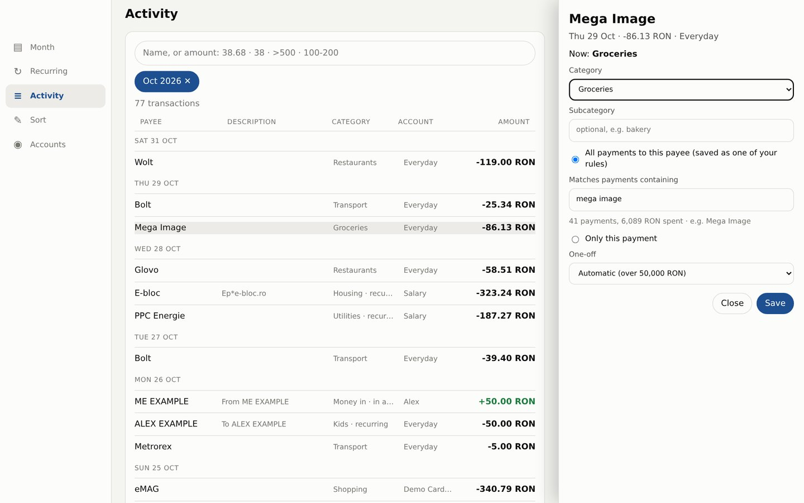
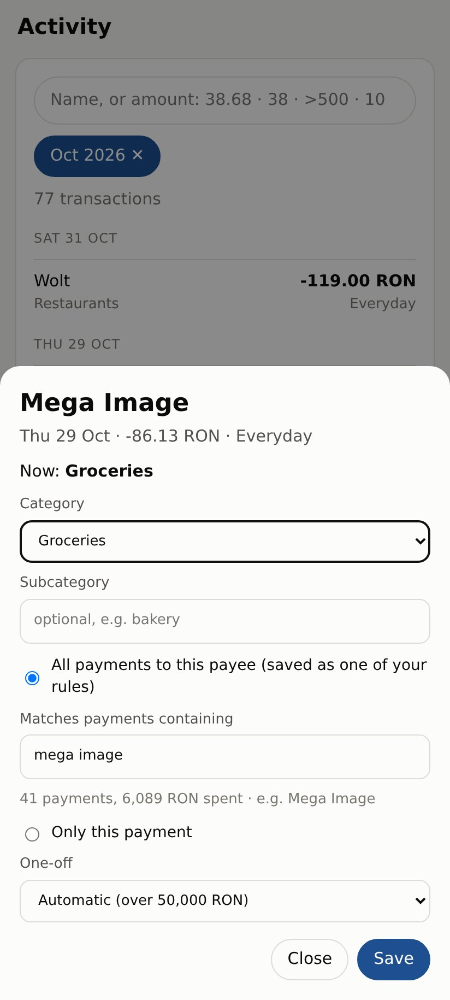

Everyday tools
Spendosaurus
Give big family expenses a plan, from the first estimate to the last installment.
See where your money goes and what you pay every month, from your own bank accounts, on your own server.
Open Banking Hub is self-hosted and read-only: each person runs their own private copy.

Open Banking Hub, or Bank Hub for short, is a self-hosted, read-only view of your own bank accounts. It pulls your transactions through the Enable Banking PSD2 API, keeps them in a SQLite file on your own machine, and answers two questions well: where did my money go, and what am I paying regularly?
It only ever reads account data and contains no code that can make a payment. A private app for your phone and laptop shows everything to the devices you register, and a read-only MCP server lets an AI assistant answer questions from a redacted view: categories, amounts, and known merchants, but never people’s names, IBANs, or payment descriptions.
It was built and tested with Revolut, ING Romania, and BRD, and any bank that Enable Banking supports should work. Enable Banking’s restricted production mode is free for your own accounts. Open Banking Hub is not affiliated with Enable Banking or any bank.
All screenshots show made-up data from the app’s built-in demo. On a laptop, the app uses the width: a sidebar, tables you can work down, and a payment or payee opening beside the list.







Open Banking Hub is written in Python with FastAPI and SQLite. It runs on a small Linux machine that stays on, with Docker Compose and a published image for amd64 and arm64, or with systemd units. You reach it from your phone over a private network such as Tailscale; it should not be exposed to the public internet. Foreign-currency amounts are converted at the National Bank of Romania’s daily rate. Nightly backups are checked for integrity, with optional encrypted off-site copies through restic. The project is open source under the MIT licence.
Give big family expenses a plan, from the first estimate to the last installment.

Your home cameras, with familiar faces recognised on your own server and a calm timeline of who came by.

Understand what changed in the companies you follow. Revisit your reasons.